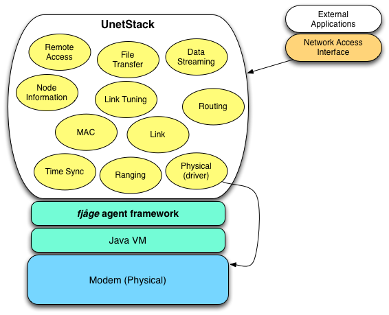

Commonly cited challenges in underwater networks include low bandwidth, long propagation delay, half-duplex nature of the links, high packet loss, and time-variability. To deploy successful networks in the face of such challenges, it is important to use highly optimized protocols that are specially designed for use in such networks. Specifically, cross-layer information sharing, low-bandwidth design and accurate transmission/reception timing can be critical in these protocols. Traditional layered network stacks provide good separation of concern, but result in sub-optimum protocols. Cross-layer optimization initiatives address this shortcoming by allowing direct interaction between layers.
We take a somewhat different approach. Our stack consists of a collection of software agents that provide well-defined services. This framework provides good separation of concern while allowing information to be shared, services to be provided, and behaviors to be negotiated between different agents. The resulting network stack is flexible and allows software-defined underwater networks to be rapidly designed, simulated, tested and deployed.
UnetStack is an agent-based underwater network stack that defines commonly needed agents with services, messages, capabilities and parameters. The stack is extensible, allowing agents to provide additional services that may be used by other agents for the development of optimized network protocols. Although the stack focuses on underwater networks, it allows wired and wireless radio links to be included as part of the network.
The UnetStack is implemented in Java and Groovy, and is based on the open-source fjåge lightweight agent framework. Although it is primarily designed for use on embedded devices, it can be run on desktops or clusters when simulating underwater networks. It provides a basic set of agents that allow an underwater network to be deployed. Designed for extensibility, UnetStack allows additional agents for optimized protocols to be rapidly developed, tested and deployed. The stack can easily be integrated with most underwater modems.
In the UnetStack, agents play the role that ‘layers’ play in traditional network stacks. However, as the agents are not organized in any enforced hierarchy, they are free to interact in any way suitable to meet application needs. This promotes low-overhead protocols and cross-layer information sharing. A driver agent offering a ‘Physical’ service usually provides access to the physical layer implementation in a modem. Multiple agents providing similar services may coexist in the modem (e.g. drivers for multiple modems, acoustic and RF links, etc.)
UnetStack is made available for download in the form of an Underwater Network Simulator that allows interested users to learn about the stack. Researchers can develop and test underwater communication technology using the simulator, and later simply copy their work to supported underwater modems for field testing.
The UnetStack currently defines the following services:
Additional services can be introduced into the stack by developers.
Readers interested in using the UnetStack or developing agents/protocols that run on the UnetStack should read the UnetStack Documentation.
{kind=link}